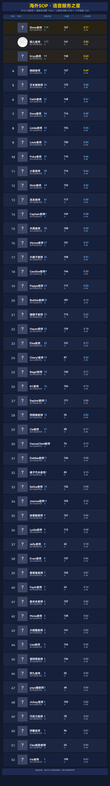
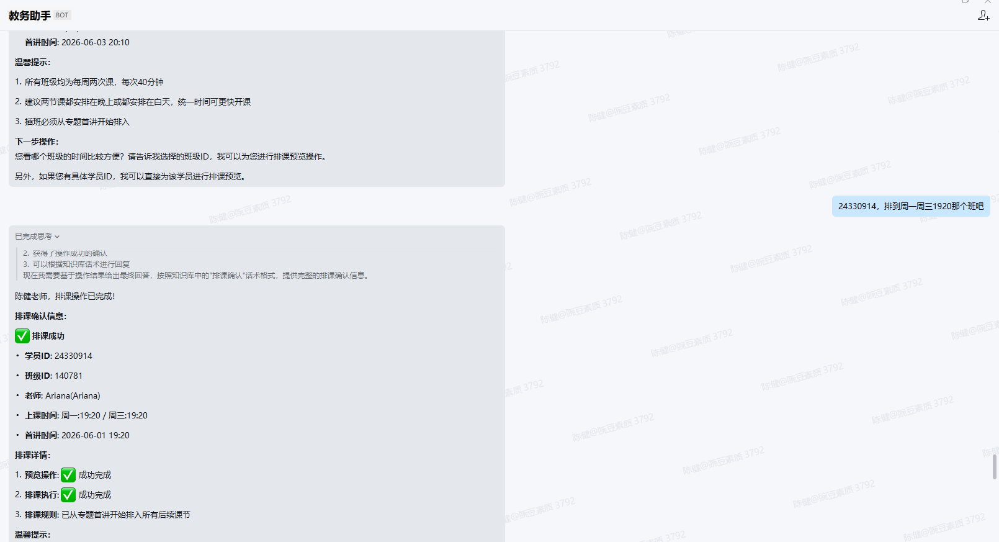
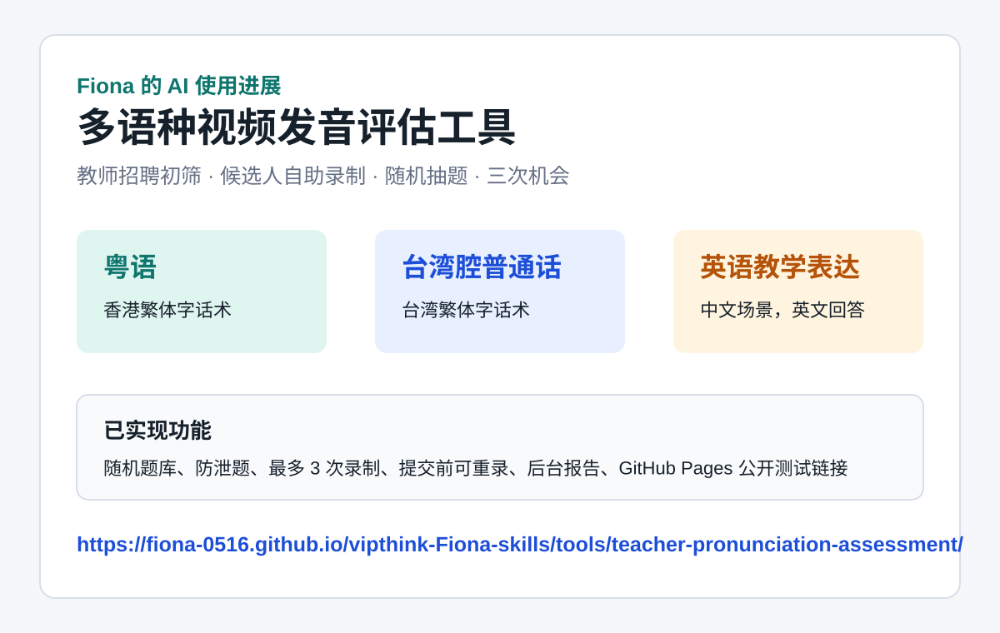

企业系统开放性是落地瓶颈
- 部分系统无法让 AI 直接接入，常见限制包括账号、权限、API、音频读取。
- LINE 仅部分版本支持 API，钉钉和企微也存在机器人外联、权限审批问题。
AI 周会分享 · 2026-05-21 16:30
本次分享围绕“AI 是否真正进入业务流程”展开：团队伙伴分别在邮件处理、监课、数据播报、排课、视频复核、聊天记录分析等场景探索；我自己的进展是用 AI 协作开发并发布了视频发音评估工具。
能放视频的直接放视频，展示从工具想法到可交互练习系统的实际产出。
展示 AI 辅助分析数据、生成文化激励海报的阶段性成果。

展示 AI 根据学员 ID 完成排课，并生成确认信息和后续操作提示。

展示招聘初筛场景下的多语种视频录制、随机题库和发音评分工具。

说明：当前版本数据保存在测试者自己的浏览器中，适合体验流程；正式招聘使用前，需要增加服务端上传和集中后台。